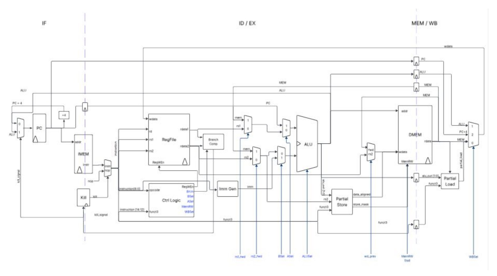

Portfolio / selected work
Projects
Hardware, systems, and research projects from internships, consulting, and personal work. Click a project for the full overview.
Power electronics for semiconductor inspection
Evaluation hardware for the high-power DC-DC converters behind semiconductor inspection camera systems.
View projectInstrumentation for EUV systems
Measurement boards and automated hardware for extreme ultraviolet tools.
View project
Custom RF generator for ion guide control
A custom RF system for quadrupole ion guide control in charge detection mass spectrometry.
View project
RISC-V processor, from RTL to layout
A three-stage pipelined RISC-V processor targeting the SkyWater 130 nm process.
View project
Automated hydroponic water sampling
A compact control system for rapid water-quality analysis in hydroponic growing systems.
View project
Haptic feedback communication PCB
Modular system combining tactile and magnetic sensing to enable haptic feedback and sensory augmentation in prosthetics and robotics.
View project
Handheld force gauge
Design handheld sensor that is capable of quantifying foam-trim deformation and locating itself in 3D space and reduces costs of existing solution.
View project
Electronics for an underwater ROV
More reliable electronics and communication for a competition underwater vehicle.
View projectCustom analog treble booster
A precision analog treble booster built around an LM741 op-amp, validated in LTspice and on a physical prototype.
View project